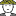

<!doctype html>
<html lang="en">
    <head>
        <meta charset="utf-8">
        <meta http-equiv="X-UA-Compatible" content="IE=edge">
        <meta name="viewport" content="initial-scale=1,user-scalable=no,maximum-scale=1,width=device-width">
        <meta name="mobile-web-app-capable" content="yes">
        <meta name="apple-mobile-web-app-capable" content="yes">
        <link rel="stylesheet" href="css/leaflet.css">
        <link rel="stylesheet" href="css/L.Control.Layers.Tree.css">
        <link rel="stylesheet" href="css/L.Control.Locate.min.css">
        <link rel="stylesheet" href="css/qgis2web.css">
        <link rel="stylesheet" href="css/fontawesome-all.min.css">
        <link rel="stylesheet" href="css/MarkerCluster.css">
        <link rel="stylesheet" href="css/MarkerCluster.Default.css">
        <style>
        html, body, #map {
            width: 100%;
            height: 100%;
            padding: 0;
            margin: 0;
        }
        </style>
        <title>Polygon Campaign</title>
    </head>
    <body>
        <div id="map">
        </div>
        <script src="js/qgis2web_expressions.js"></script>
        <script src="js/leaflet.js"></script>
        <script src="js/L.Control.Layers.Tree.min.js"></script>
        <script src="js/L.Control.Locate.min.js"></script>
        <script src="js/leaflet.rotatedMarker.js"></script>
        <script src="js/leaflet.pattern.js"></script>
        <script src="js/leaflet-hash.js"></script>
        <script src="js/Autolinker.min.js"></script>
        <script src="js/rbush.min.js"></script>
        <script src="js/labelgun.min.js"></script>
        <script src="js/labels.js"></script>
        <script src="js/leaflet.markercluster.js"></script>
        <script src="data/LandStatus_3.js"></script>
        <script src="data/PointSample_4.js"></script>
        <script src="data/PolygonCollected_5.js"></script>
        <script>
        var map = L.map('map', {
            zoomControl:false, maxZoom:28, minZoom:1
        }).fitBounds([[-5.408357243749999,104.38417813486659],[-5.21378830625,104.78315376513343]]);
        var hash = new L.Hash(map);
        map.attributionControl.setPrefix(' <a href="https://leafletjs.com" title="A JS library for interactive maps">Leaflet</a>');
        var autolinker = new Autolinker({truncate: {length: 30, location: 'smart'}});
        // remove popup's row if "visible-with-data"
        function removeEmptyRowsFromPopupContent(content, feature) {
         var tempDiv = document.createElement('div');
         tempDiv.innerHTML = content;
         var rows = tempDiv.querySelectorAll('tr');
         for (var i = 0; i < rows.length; i++) {
             var td = rows[i].querySelector('td.visible-with-data');
             var key = td ? td.id : '';
             if (td && td.classList.contains('visible-with-data') && feature.properties[key] == null) {
                 rows[i].parentNode.removeChild(rows[i]);
             }
         }
         return tempDiv.innerHTML;
        }
        // add class to format popup if it contains media
		function addClassToPopupIfMedia(content, popup) {
			var tempDiv = document.createElement('div');
			tempDiv.innerHTML = content;
			if (tempDiv.querySelector('td img')) {
				popup._contentNode.classList.add('media');
					// Delay to force the redraw
					setTimeout(function() {
						popup.update();
					}, 10);
			} else {
				popup._contentNode.classList.remove('media');
			}
		}
        var title = new L.Control({'position':'topright'});
        title.onAdd = function (map) {
            this._div = L.DomUtil.create('div', 'info');
            this.update();
            return this._div;
        };
        title.update = function () {
            this._div.innerHTML = '<h2>Polygon Campaign</h2>';
        };
        title.addTo(map);
        var zoomControl = L.control.zoom({
            position: 'topleft'
        }).addTo(map);
        L.control.locate({locateOptions: {maxZoom: 19}}).addTo(map);
        var bounds_group = new L.featureGroup([]);
        function setBounds() {
        }
        map.createPane('pane_EsriSatellite_0');
        map.getPane('pane_EsriSatellite_0').style.zIndex = 400;
        var layer_EsriSatellite_0 = L.tileLayer('https://server.arcgisonline.com/ArcGIS/rest/services/World_Imagery/MapServer/tile/{z}/{y}/{x}', {
            pane: 'pane_EsriSatellite_0',
            opacity: 1.0,
            attribution: '',
            minZoom: 1,
            maxZoom: 28,
            minNativeZoom: 0,
            maxNativeZoom: 17
        });
        layer_EsriSatellite_0;
        map.addLayer(layer_EsriSatellite_0);
        map.createPane('pane_EsriTopoWorld_1');
        map.getPane('pane_EsriTopoWorld_1').style.zIndex = 401;
        var layer_EsriTopoWorld_1 = L.tileLayer('http://services.arcgisonline.com/ArcGIS/rest/services/World_Topo_Map/MapServer/tile/{z}/{y}/{x}', {
            pane: 'pane_EsriTopoWorld_1',
            opacity: 1.0,
            attribution: '',
            minZoom: 1,
            maxZoom: 28,
            minNativeZoom: 0,
            maxNativeZoom: 20
        });
        layer_EsriTopoWorld_1;
        map.addLayer(layer_EsriTopoWorld_1);
        map.createPane('pane_OpenStreetMap_2');
        map.getPane('pane_OpenStreetMap_2').style.zIndex = 402;
        var layer_OpenStreetMap_2 = L.tileLayer('http://tile.openstreetmap.org/{z}/{x}/{y}.png', {
            pane: 'pane_OpenStreetMap_2',
            opacity: 1.0,
            attribution: '',
            minZoom: 1,
            maxZoom: 28,
            minNativeZoom: 0,
            maxNativeZoom: 18
        });
        layer_OpenStreetMap_2;
        map.addLayer(layer_OpenStreetMap_2);
        function pop_LandStatus_3(feature, layer) {
            var popupContent = '<table>\
                    <tr>\
                        <td colspan="2">' + (feature.properties['Nama'] !== null ? autolinker.link(feature.properties['Nama'].toLocaleString()) : '') + '</td>\
                    </tr>\
                    <tr>\
                        <td colspan="2">' + (feature.properties['Kode'] !== null ? autolinker.link(feature.properties['Kode'].toLocaleString()) : '') + '</td>\
                    </tr>\
                    <tr>\
                        <td colspan="2">' + (feature.properties['Luas'] !== null ? autolinker.link(feature.properties['Luas'].toLocaleString()) : '') + '</td>\
                    </tr>\
                </table>';
            var content = removeEmptyRowsFromPopupContent(popupContent, feature);
			layer.on('popupopen', function(e) {
				addClassToPopupIfMedia(content, e.popup);
			});
			layer.bindPopup(content, { maxHeight: 400 });
        }

        function style_LandStatus_3_0(feature) {
            switch(String(feature.properties['Nama'])) {
                case 'Hutan Lindung':
                    return {
                pane: 'pane_LandStatus_3',
                stroke: false, 
                fill: true,
                fillOpacity: 1,
                fillColor: 'rgba(2,173,0,0.5019607843137255)',
                interactive: false,
            }
                    break;
                case 'Hutan Produksi':
                    return {
                pane: 'pane_LandStatus_3',
                stroke: false, 
                fill: true,
                fillOpacity: 1,
                fillColor: 'rgba(255,255,0,0.5019607843137255)',
                interactive: false,
            }
                    break;
                case 'Hutan Produksi Terbatas':
                    return {
                pane: 'pane_LandStatus_3',
                stroke: false, 
                fill: true,
                fillOpacity: 1,
                fillColor: 'rgba(138,242,0,0.5019607843137255)',
                interactive: false,
            }
                    break;
                case 'Kawasan Pelestarian dan Konservasi Alam':
                    return {
                pane: 'pane_LandStatus_3',
                stroke: false, 
                fill: true,
                fillOpacity: 1,
                fillColor: 'rgba(173,63,255,0.5019607843137255)',
                interactive: false,
            }
                    break;
                default:
                    return {
                pane: 'pane_LandStatus_3',
                stroke: false,
                fillOpacity: 0,
                interactive: false,
            }
                    break;
            }
        }
        map.createPane('pane_LandStatus_3');
        map.getPane('pane_LandStatus_3').style.zIndex = 403;
        map.getPane('pane_LandStatus_3').style['mix-blend-mode'] = 'normal';
        var layer_LandStatus_3 = new L.geoJson(json_LandStatus_3, {
            attribution: '',
            interactive: false,
            dataVar: 'json_LandStatus_3',
            layerName: 'layer_LandStatus_3',
            pane: 'pane_LandStatus_3',
            onEachFeature: pop_LandStatus_3,
            style: style_LandStatus_3_0,
        });
        bounds_group.addLayer(layer_LandStatus_3);
        map.addLayer(layer_LandStatus_3);
        function pop_PointSample_4(feature, layer) {
            var popupContent = '<table>\
                    <tr>\
                        <th scope="row">4C_UNIT</th>\
                        <td class="visible-with-data" id="4C_UNIT">' + (feature.properties['4C_UNIT'] !== null ? autolinker.link(feature.properties['4C_UNIT'].toLocaleString()) : '') + '</td>\
                    </tr>\
                    <tr>\
                        <th scope="row">Legal_Name</th>\
                        <td class="visible-with-data" id="Legal_Name">' + (feature.properties['Legal_Name'] !== null ? autolinker.link(feature.properties['Legal_Name'].toLocaleString()) : '') + '</td>\
                    </tr>\
                    <tr>\
                        <th scope="row">Farm_Name</th>\
                        <td class="visible-with-data" id="Farm_Name">' + (feature.properties['Farm_Name'] !== null ? autolinker.link(feature.properties['Farm_Name'].toLocaleString()) : '') + '</td>\
                    </tr>\
                    <tr>\
                        <th scope="row">Address</th>\
                        <td class="visible-with-data" id="Address">' + (feature.properties['Address'] !== null ? autolinker.link(feature.properties['Address'].toLocaleString()) : '') + '</td>\
                    </tr>\
                </table>';
            var content = removeEmptyRowsFromPopupContent(popupContent, feature);
			layer.on('popupopen', function(e) {
				addClassToPopupIfMedia(content, e.popup);
			});
			layer.bindPopup(content, { maxHeight: 400 });
        }

        function style_PointSample_4_0() {
            return {
                pane: 'pane_PointSample_4',
        rotationAngle: 0.0,
        rotationOrigin: 'center center',
        icon: L.icon({
            iconUrl: 'markers/PointSample_4.svg',
            iconSize: [22.799999999999997, 22.799999999999997]
        }),
                interactive: true,
            }
        }
        map.createPane('pane_PointSample_4');
        map.getPane('pane_PointSample_4').style.zIndex = 404;
        map.getPane('pane_PointSample_4').style['mix-blend-mode'] = 'normal';
        var layer_PointSample_4 = new L.geoJson(json_PointSample_4, {
            attribution: '',
            interactive: true,
            dataVar: 'json_PointSample_4',
            layerName: 'layer_PointSample_4',
            pane: 'pane_PointSample_4',
            onEachFeature: pop_PointSample_4,
            pointToLayer: function (feature, latlng) {
                var context = {
                    feature: feature,
                    variables: {}
                };
                return L.marker(latlng, style_PointSample_4_0(feature));
            },
        });
        var cluster_PointSample_4 = new L.MarkerClusterGroup({showCoverageOnHover: false,
            spiderfyDistanceMultiplier: 2});
        cluster_PointSample_4.addLayer(layer_PointSample_4);

        bounds_group.addLayer(layer_PointSample_4);
        cluster_PointSample_4.addTo(map);
        function pop_PolygonCollected_5(feature, layer) {
            var popupContent = '<table>\
                    <tr>\
                        <th scope="row">Enumerator</th>\
                        <td class="visible-with-data" id="Enumerator">' + (feature.properties['Enumerator'] !== null ? autolinker.link(feature.properties['Enumerator'].toLocaleString()) : '') + '</td>\
                    </tr>\
                    <tr>\
                        <th scope="row">4C Unit</th>\
                        <td class="visible-with-data" id="4C_UNIT">' + (feature.properties['4C_UNIT'] !== null ? autolinker.link(feature.properties['4C_UNIT'].toLocaleString()) : '') + '</td>\
                    </tr>\
                    <tr>\
                        <th scope="row">ID Entity</th>\
                        <td class="visible-with-data" id="ID_Entity">' + (feature.properties['ID_Entity'] !== null ? autolinker.link(feature.properties['ID_Entity'].toLocaleString()) : '') + '</td>\
                    </tr>\
                    <tr>\
                        <th scope="row">Legal Name</th>\
                        <td class="visible-with-data" id="Legal_Name">' + (feature.properties['Legal_Name'] !== null ? autolinker.link(feature.properties['Legal_Name'].toLocaleString()) : '') + '</td>\
                    </tr>\
                    <tr>\
                        <th scope="row">Farm Name</th>\
                        <td class="visible-with-data" id="Farm_Name">' + (feature.properties['Farm_Name'] !== null ? autolinker.link(feature.properties['Farm_Name'].toLocaleString()) : '') + '</td>\
                    </tr>\
                    <tr>\
                        <th scope="row">Address</th>\
                        <td class="visible-with-data" id="Address">' + (feature.properties['Address'] !== null ? autolinker.link(feature.properties['Address'].toLocaleString()) : '') + '</td>\
                    </tr>\
                    <tr>\
                        <th scope="row">Foto Petani</th>\
                        <td class="visible-with-data" id="Foto_Petan">' + (feature.properties['Foto_Petan'] !== null ? '' : '') + '</td>\
                    </tr>\
                    <tr>\
                        <th scope="row">Plot</th>\
                        <td class="visible-with-data" id="Plot">' + (feature.properties['Plot'] !== null ? '' : '') + '</td>\
                    </tr>\
                    <tr>\
                        <th scope="row">No Lahan</th>\
                        <td class="visible-with-data" id="No Lahan">' + (feature.properties['No Lahan'] !== null ? autolinker.link(feature.properties['No Lahan'].toLocaleString()) : '') + '</td>\
                    </tr>\
                </table>';
            var content = removeEmptyRowsFromPopupContent(popupContent, feature);
			layer.on('popupopen', function(e) {
				addClassToPopupIfMedia(content, e.popup);
			});
			layer.bindPopup(content, { maxHeight: 400 });
        }

        function style_PolygonCollected_5_0() {
            return {
                pane: 'pane_PolygonCollected_5',
        rotationAngle: 0.0,
        rotationOrigin: 'center center',
        icon: L.icon({
            iconUrl: 'markers/PolygonCollected_5.svg',
            iconSize: [22.799999999999997, 22.799999999999997]
        }),
                interactive: true,
            }
        }
        map.createPane('pane_PolygonCollected_5');
        map.getPane('pane_PolygonCollected_5').style.zIndex = 405;
        map.getPane('pane_PolygonCollected_5').style['mix-blend-mode'] = 'normal';
        var layer_PolygonCollected_5 = new L.geoJson(json_PolygonCollected_5, {
            attribution: '',
            interactive: true,
            dataVar: 'json_PolygonCollected_5',
            layerName: 'layer_PolygonCollected_5',
            pane: 'pane_PolygonCollected_5',
            onEachFeature: pop_PolygonCollected_5,
            pointToLayer: function (feature, latlng) {
                var context = {
                    feature: feature,
                    variables: {}
                };
                return L.marker(latlng, style_PolygonCollected_5_0(feature));
            },
        });
        var cluster_PolygonCollected_5 = new L.MarkerClusterGroup({showCoverageOnHover: false,
            spiderfyDistanceMultiplier: 2});
        cluster_PolygonCollected_5.addLayer(layer_PolygonCollected_5);

        bounds_group.addLayer(layer_PolygonCollected_5);
        cluster_PolygonCollected_5.addTo(map);

        
        var baseMaps = {};
        var overlaysTree = [
            {label: ' Polygon Collected', layer: cluster_PolygonCollected_5},
            {label: ' Point Sample', layer: cluster_PointSample_4},
            {label: 'Land Status<br /><table><tr><td style="text-align: center;"></td><td>Hutan Lindung</td></tr><tr><td style="text-align: center;"></td><td>Hutan Produksi</td></tr><tr><td style="text-align: center;"></td><td>Hutan Produksi Terbatas</td></tr><tr><td style="text-align: center;"></td><td>Kawasan Pelestarian dan Konservasi Alam</td></tr><tr><td style="text-align: center;"></td><td></td></tr></table>', layer: layer_LandStatus_3},
            {label: "OpenStreetMap", layer: layer_OpenStreetMap_2},
            {label: "Esri Topo World", layer: layer_EsriTopoWorld_1},
            {label: "Esri Satellite", layer: layer_EsriSatellite_0},]
        var lay = L.control.layers.tree(null, overlaysTree,{
            //namedToggle: true,
            //selectorBack: false,
            //closedSymbol: '&#8862; &#x1f5c0;',
            //openedSymbol: '&#8863; &#x1f5c1;',
            //collapseAll: 'Collapse all',
            //expandAll: 'Expand all',
            collapsed: true,
        });
        lay.addTo(map);
        setBounds();
        var i = 0;
        layer_LandStatus_3.eachLayer(function(layer) {
            var context = {
                feature: layer.feature,
                variables: {}
            };
            layer.bindTooltip((layer.feature.properties['Nama'] !== null?String('<div style="color: #323232; font-size: 8pt; font-style: italic; font-family: \'Open Sans\', sans-serif;">' + layer.feature.properties['Nama']) + '</div>':''), {permanent: true, offset: [-0, -16], className: 'css_LandStatus_3'});
            labels.push(layer);
            totalMarkers += 1;
              layer.added = true;
              addLabel(layer, i);
              i++;
        });
        var i = 0;
        layer_PointSample_4.eachLayer(function(layer) {
            var context = {
                feature: layer.feature,
                variables: {}
            };
            layer.bindTooltip((layer.feature.properties['Legal_Name'] !== null?String('<div style="color: #323232; font-size: 8pt; font-family: \'Open Sans\', sans-serif;">' + layer.feature.properties['Legal_Name']) + '</div>':''), {permanent: true, offset: [-0, -16], className: 'css_PointSample_4'});
            labels.push(layer);
            totalMarkers += 1;
              layer.added = true;
              addLabel(layer, i);
              i++;
        });
        var i = 0;
        layer_PolygonCollected_5.eachLayer(function(layer) {
            var context = {
                feature: layer.feature,
                variables: {}
            };
            layer.bindTooltip((layer.feature.properties['Legal_Name'] !== null?String('<div style="color: #323232; font-size: 8pt; font-style: italic; font-family: \'Open Sans\', sans-serif;">' + layer.feature.properties['Legal_Name']) + '</div>':''), {permanent: true, offset: [-0, -16], className: 'css_PolygonCollected_5'});
            labels.push(layer);
            totalMarkers += 1;
              layer.added = true;
              addLabel(layer, i);
              i++;
        });
        resetLabels([layer_LandStatus_3,layer_PointSample_4,layer_PolygonCollected_5]);
        map.on("zoomend", function(){
            resetLabels([layer_LandStatus_3,layer_PointSample_4,layer_PolygonCollected_5]);
        });
        map.on("layeradd", function(){
            resetLabels([layer_LandStatus_3,layer_PointSample_4,layer_PolygonCollected_5]);
        });
        map.on("layerremove", function(){
            resetLabels([layer_LandStatus_3,layer_PointSample_4,layer_PolygonCollected_5]);
        });
        L.Control.Watermark=L.Control.extend({
            onAdd:function(map){
                var img = L.DomUtil.create('img');
                img.src = "images/Logo_SAL.png";
                img.style.width = '100px';
                return img;
                },
                onRemove:function(map){},
                });
                L.control.watermark = function(opts){
                    return new L.Control.Watermark(opts);
                    }
                L.control.watermark({position:'bottomleft'}).addTo(map);
        </script>
    </body>
</html>
